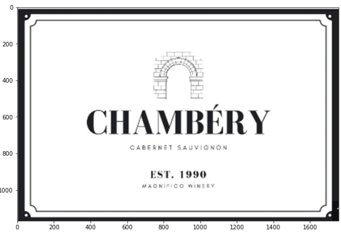

Image Processing
Image processing is the process of transforming an image into a digital form and performing certain operations to get some useful information from it. For each of the following functions, all of the code and datasets can be found here:
Initial Image & Dataset
For this section, we are going to use the following image along with PyTesseract to extract text from the image. For this project, you need to download pytesseract and route where you downloaded PyTesseract to the command as seen in the first image at the bottom. From there, follow the code below to run PyTesseract on the image and see what the initial output will be. I chose this image since there is some cursive and other fancy writing that it will not be able to pick up unless there is more image pre-processing that is done.
Output: ['CHAMBERY', 'EST. 1990']
Resize Image
Resizing the image will allow for PyTesseract to better read the image provided as the text will be larger and easier for the model to read as compared to a smaller image. In order to do this, follow the code below:
Output: ['CHAMBERY', 'CABERNET SAUVIGNON', 'EST. 19990', 'MAGN FICO WINERY']
Gray Scale
It helps in simplifying algorithms and as well eliminates the complexities related to computational requirements. It makes room for easier learning for those who are new to image processing. This is because grayscale compressors an image to its barest minimum pixel. In order to do this, follow the code below:
Output: ['CHAMBERY', 'CABERNET SAUVIGNON', 'EST. 19990', 'MAGN FICO WINERY']
Histogram Equalization
Histogram equalization is a process where the intensity values of an image are adjusted to create a higher overall contrast. Digital Image Processing is a significant aspect of data science. It is used to enhance and modify images so that their attributes are more easily understandable. In order to do this, follow the code below:
Output: ['CHAMBERY', 'CABERNET SAUVIGNON', 'EST. 1990', 'WMAGNIFICO WINERY']
Bilateral Filter
A bilateral filter is used for smoothening images and reducing noise, while preserving edges. This allows us to ignore small imperfections in the image and make sure that it isn't converted into text. In order to do this, follow the code below:
Output: ['CHAMBE RY', 'CABERNET SAU', 'EST. 19990', 'W#AON CO WINERY']
Image to Binary
Images also need to be converted into binary in order for a computer to process them so that they can be seen on our screen. The main advantage of binary images is that it decreases computational load and increases efficiency of the systems. In order to do this, follow the code below:
Output: ['CHAMBERY', 'CABERNET SAUVIGNON', 'EST. 1990', 'AARORIFICO WINERY']
Dilation
Dilation of an image is the process by which the object area in the image is increased. This process is used to accentuate features in the image (in this case the text). It increases the white region in the image or the size of the foreground object increases. In order to do this, follow the code below:
Output: ['CHAMBERY', 'CABERNET SAUVIGNON', 'EST. 1990', 'MAKONIFICO WINERY']
Erosion
Erosion removes pixels on object boundaries. In other words, it shrinks the foreground objects. Enlarge foreground holes. Like in Image Processing Kernels, a larger size of the Structure Element, the effect of Erosion increase. In order to do this, follow the code below:

Output: ['CHAMBERY', 'CABERNET SAUVIGNON', 'EST. 1990', 'AAORIFICO WIRERY']
NOTE
Note that when reading text off of images, it is a mix of these image pre-processing techniques that are required to get the most accurate reading possible. HOWEVER, it is not necessary to use all of them, as seen in the example above. The most accurate reading of the image was after the histogram equalization which shows that not all of the image processing techniques were even helpful, so keep that in mind when using these functions.